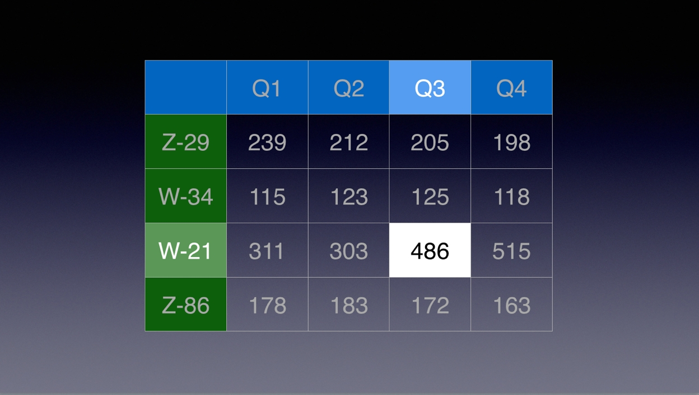

“And as you can see, the third quarter results for W-21 are increasing…” blah, blah, blah. (insert sounds like Charlie Brown’s teacher).
PRESENTATION RULE #5: Don’t assume that your audience sees what you see, or understands what you’re saying. Make it easy for them to recognize and absorb the point you’re making.
This is especially true when presenting tables. If there’s a cell value to highlight, then highlight it using the following script. Ah, peace and understanding are attained.
(⬆ see above ) A cell selected in a table on a slide. (⬇ see below ) A duplicate slide with the table formated to highlight the cell selected in the source table. Note that the row and column headers for the targeted cell are lighter, while the other table values are shaded darker.

Here’s what the effect looks like in a presentation. (Click Movie to Play)
This script will duplicate the slide containing the selected table cell, and format the duplicated table to highlight the previously selected cell. In addition, the script will apply a transition to the source slide, and for your review, will start the presentation from the source slide. Enjoy!
IMPORTANT TIP: Learn how to save and run your favorite scripts using the system-wide Script Menu.
Mention of third-party websites and products is for informational purposes only and constitutes neither an endorsement nor a recommendation. MACOSXAUTOMATION.COM assumes no responsibility with regard to the selection, performance or use of information or products found at third-party websites. MACOSXAUTOMATION.COM provides this only as a convenience to our users. MACOSXAUTOMATION.COM has not tested the information found on these sites and makes no representations regarding its accuracy or reliability. There are risks inherent in the use of any information or products found on the Internet, and MACOSXAUTOMATION.COM assumes no responsibility in this regard. Please understand that a third-party site is independent from MACOSXAUTOMATION.COM and that MACOSXAUTOMATION.COM has no control over the content on that website. Please contact the vendor for additional information.